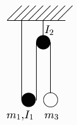

You’re viewing an archive of outdated material. Visit The Web Standards Project’s updated site to learn about our current mission.
Opera doesn't properly support one of the simplest uses of floating elements, floating an image into the margin in the middle of a paragraph. Suppose I were writing about a physics problem involving a bunch of pulleys. This is known as an Atwood's Machine. So say there is a mass m3 supported by a system of two pulleys. The pulley closest to the mass is fixed by a rope to the ceiling, so it can only rotate. It has inertia I2. The other pulley is free to move up and down, and it is being held up on its two ends by a rope that is connected on one end to the first pulley and on the other end to the ceiling. This is getting complicated, isn't it? So wouldn't I want to include a figure, right here in the text? This makes it much easier to understand the problem. But Opera doesn't display this correctly. It hides text under the floating image. This should not happen. It is a serious bug, since it is in one of the most basic uses of floating elements.